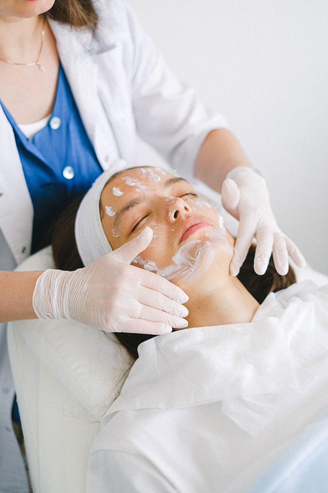
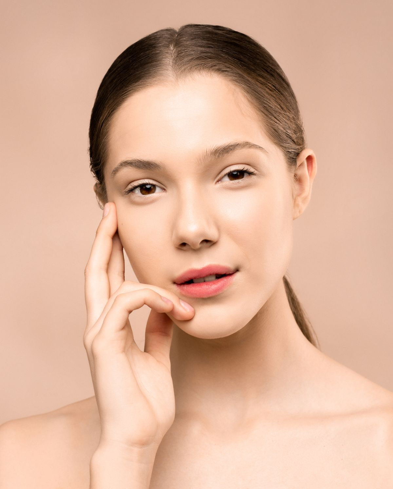
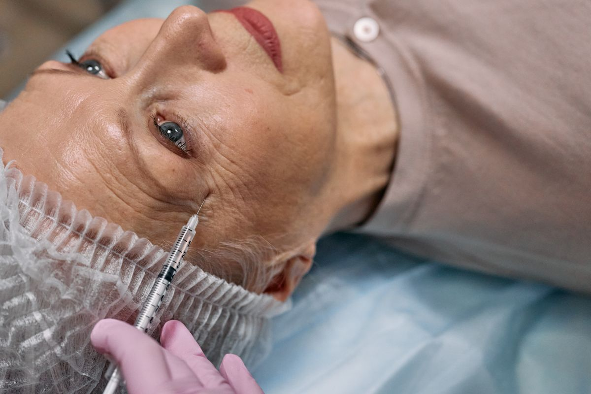
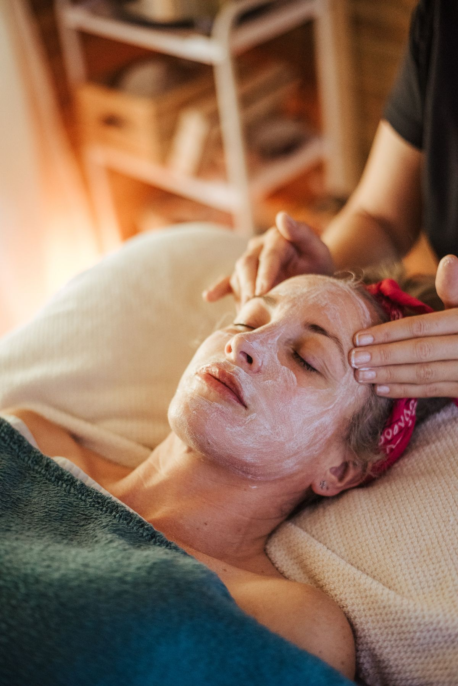
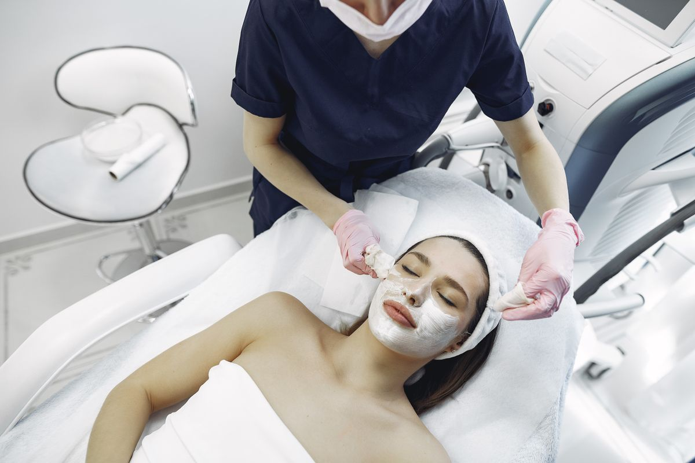
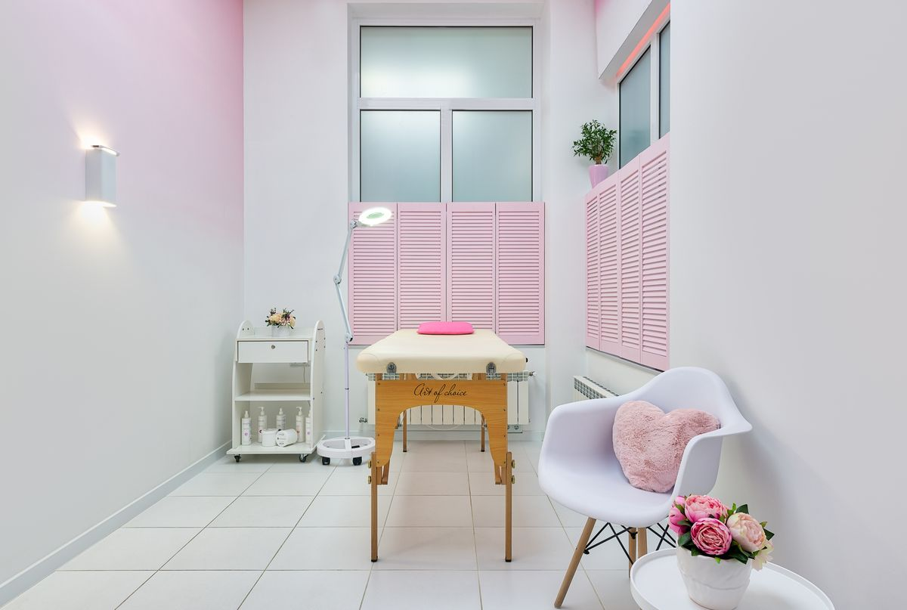
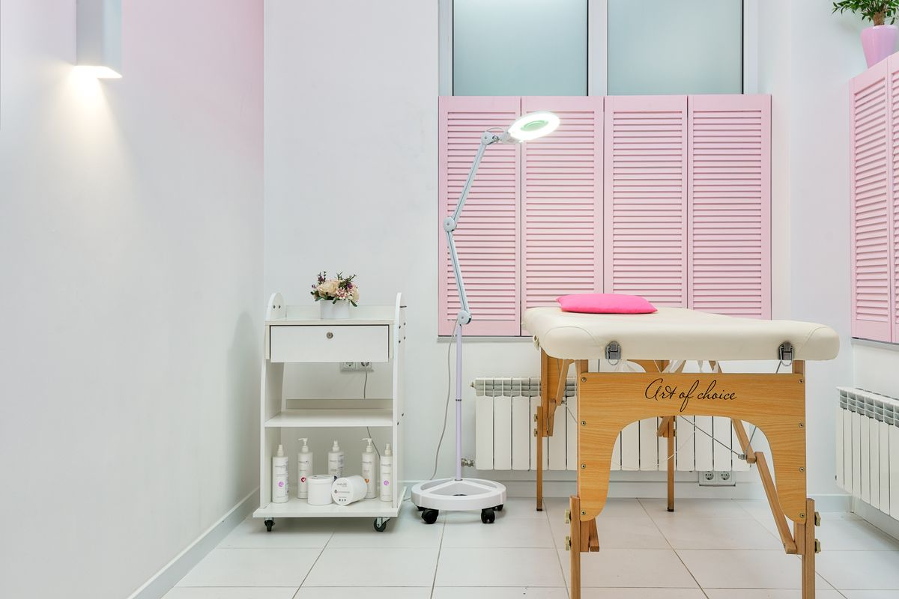

تزریق ژل
تزریق ژل برای حجمدهی و فرمدهی به نواحی مختلف صورت؛ نوع ژل و میزان آن در جلسه مشاوره و بر اساس فرم چهره شما مشخص میشود.
دکتر ملینا پورکاظمی، پزشک زیبایی (نظام پزشکی ۱۹۴۴۶۰) در تجریش تهران — با هفت خدمت تخصصی تزریقی و مراقبتی پوست: تزریق ژل، فیلر، پروفایلو، ژل گونه، بوتاکس، مزوژل و جالپرو؛ و حالا میتوانید نوبتتان را همینجا، آنلاین رزرو کنید.

همه خدمات دکتر پورکاظمی در یک حوزهاند: فرمدهی ملایم و بهبود کیفیت پوست — بدون تغییر اغراقآمیز، با تمرکز بر تناسب طبیعی چهره شما.
تزریق ژل برای حجمدهی و فرمدهی به نواحی مختلف صورت؛ نوع ژل و میزان آن در جلسه مشاوره و بر اساس فرم چهره شما مشخص میشود.
فیلر برای پر کردن خطوط و بازگرداندن حجم ازدسترفته صورت استفاده میشود؛ انتخاب نوع فیلر به ناحیه درمان و شرایط پوست شما بستگی دارد.

پروفایلو یک درمان تزریقی آبرسان و جوانساز پوست است که در چند نقطه صورت تزریق میشود و به بهبود کیفیت و شادابی پوست کمک میکند.

تزریق ژل گونه برای فرمدهی و برجستهسازی گونه؛ با هدف حفظ تناسب طبیعی چهره و بدون تغییر اغراقآمیز.

تزریق بوتاکس برای کاهش ظاهر خطوط حرکتی صورت، مثل خطوط پیشانی و دور چشم؛ میزان و نقاط تزریق در جلسه مشاوره مشخص میشود.
مزوژل ترکیبی از مواد آبرسان و مغذی است که به لایههای سطحی پوست تزریق میشود تا رطوبت و شادابی پوست بهتر شود.

جالپرو یک درمان تزریقی برای بهبود کیفیت، سفتی و شفافیت پوست است؛ معمولاً در چند جلسه و با فاصله مشخص انجام میشود.

فلسفه کار دکتر پورکاظمی در یک جمله خلاصه میشود: «زیبایی طبیعی». یعنی هر اقدامی — از ژل گونه تا بوتاکس — با هدف حفظ تناسب چهره شما انجام میشود، نه ساختن چهرهای دیگر.
هدف، نتیجهای ملایم و متناسب با چهره شماست؛ تغییری که حس شود، نه اینکه جلب توجه کند.
پیش از هر تزریق، در جلسه مشاوره فرم چهره و شرایط پوست شما بررسی میشود و روش مناسب برای خودتان پیشنهاد میشود.
همه خدمات توسط دکتر ملینا پورکاظمی، پزشک زیبایی، انجام میشود؛ با رعایت اصول بهداشتی در محیط مطب.
مطب در خیابان شریعتی، نرسیده به میدان قدس، کوچه تدین، پلاک ۹ است؛ نزدیک مترو تجریش و در دسترس از نقاط مختلف شمال تهران.
از فضای آرام و روشن مطب تا جزئیات درمانهای صورت؛ تصاویری از محیط و روند کار در مطبهای زیبایی مدرن.






آنلاین از همین سایت، در واتساپ یا با یک تماس؛ هر راهی که برایتان سادهتر است.
در جلسه مشاوره، فرم چهره و شرایط پوست شما بررسی میشود و روش مناسب و مراحل کار به زبان ساده توضیح داده میشود.
اقدام انتخابشده — از تزریق ژل و بوتاکس تا پروفایلو و جالپرو — طبق همان طرحی انجام میشود که در مشاوره بر سر آن توافق شده است.
بعد از کار، نکات مراقبتی گفته میشود و برای کنترل روند بهبود، در کنار شما هستیم.
سه راه دارید: فرم رزرو آنلاین همین صفحه، ارسال پیام در واتساپ به شماره ۰۹۹۰۴۱۰۵۰۰۷، یا تماس با همین شماره. بعد از ثبت درخواست، برای هماهنگی ساعت دقیق با شما تماس میگیریم.
تهران، خیابان شریعتی، نرسیده به میدان قدس، کوچه تدین، پلاک ۹، طبقه ۴، واحد ۱۴ — نزدیک مترو تجریش. شماره تماس و واتساپ: ۰۹۹۰۴۱۰۵۰۰۷.
بله. پیش از هر اقدام، در جلسه مشاوره فرم چهره و شرایط پوست شما بررسی میشود تا روش مناسب — و میزان و نقاط تزریق — برای خودتان مشخص شود.
ماندگاری به نوع درمان، ناحیه تزریق و شرایط بدن هر فرد بستگی دارد و در جلسه مشاوره درباره آن صحبت میشود. هیچ نتیجهای را نمیتوان برای همه افراد یکسان تضمین کرد.
معمولاً تزریقها با بیحسی موضعی انجام میشود؛ میزان ناراحتی برای هر فرد متفاوت است و پیش از شروع کار، در جلسه مشاوره درباره آن توضیح داده میشود.
فرم را پر کن؛ برای هماهنگی ساعت مراجعه با تو تماس میگیریم. اگر ترجیح میدهی در واتساپ صحبت کنیم، از دکمه زیر پیام بده یا مستقیم تماس بگیر:
۰۹۹۰ - ۴۱۰ ۵۰۰۷ واتساپ مطب: ۰۹۹۰ - ۴۱۰ ۵۰۰۷